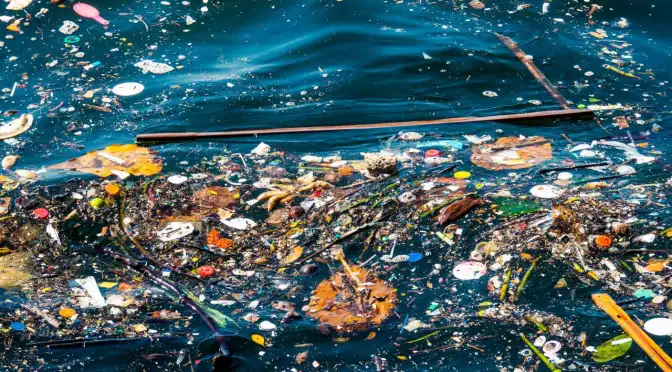

जल प्रदूषण या विषयावर माहिती


जल प्रदूषण म्हणजे पाण्यात असलेल्या हानिकारक पदार्थांमुळे पाण्याची गुणवत्ता कमी होणे. जल हा जीवनाचा एक महत्त्वाचा भाग आहे. मानव, प्राणी आणि वनस्पती यांना पाण्याची आवश्यकता असते. परंतु आजच्या काळात जल प्रदूषण एक गंभीर समस्या बनली आहे.
जल प्रदूषणाचे मुख्य कारणे:
1. उद्योगांचे वायू: कारखान्यांमधून निघणारे जळूण, रासायनिक वायू आणि अपशिष्ट पाण्यामुळे पाण्याला प्रदूषण होते.
2. कृषी रसायने: शेतीमध्ये वापरण्यात येणारी कीटकनाशके आणि खाद्यपदार्थ पाण्यात मिसळल्यास जल प्रदूषण होते.
3. घरे आणि कचरा: घरांमधील नाले आणि पाण्याच्या स्रोतांमध्ये थेट कचरा टाकल्यामुळे पाण्यात विविध हानिकारक पदार्थ मिसळतात.
4. प्लास्टिक: प्लास्टिकच्या वस्तू जलाशयात टाकल्यास पाणी प्रदूषित होते आणि जलीय जीवनाला धोका निर्माण करतो.
जल प्रदूषणामुळे अनेक समस्या उद्भवतात. पाण्यातील जीव जंतु मरतात, माणसांना आरोग्याच्या समस्या येतात, आणि पाण्याची उपलब्धता कमी होते. त्यामुळे जल प्रदूषण थांबविणे अत्यंत आवश्यक आहे.
उपाय:
1. जलाशयांमध्ये कचरा टाकण्यास मनाई करणे.
2. प्लास्टिकचा वापर कमी करणे.
3. औद्योगिक कचरा योग्य पद्धतीने व्यवस्थापित करणे.
4. जलसंवर्धनाचे महत्व शिकवणे.
जल प्रदूषण थांबविण्यासाठी प्रत्येकाने आपली भूमिका बजावली पाहिजे. एकत्र येऊन आपण आपल्या जलस्रोतांचे रक्षण करू शकतो.